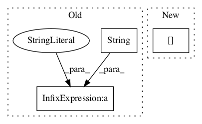

0c816cbbc8b607d2edc64888bfd7bac329699953,python/timeseries/timeseries_regression.py,,find_anomalies_with_regression,#Any#Any#Any#Any#Any#Any#,19
Before Change
pred_points = scaler.inverse_transform(pred_points)
pred_points = np.vstack([np.zeros(shape=(1, ts.y.shape[1]), dtype=np.float32), pred_points])
pred_points = invert_difference_series(pred_points, data[[0], :])
logger.debug("inv_diffs:(%s)\n%s" % (str(pred_points.shape), str(pred_points)) )
scores = np.abs(data[n_tr:, 0] - pred_points[n_tr:, 0])
After Change
prev_points.append(scaled_test[i, 0]) // to predict just one step ahead of known values
// prev_points.append(yhat) // to predict far into the future
logger.debug("pred_points:(%d)\n%s" % (len(pred_points[scaled_tr.shape[0]:]), str(list(pred_points[scaled_tr.shape[0]:] ))))
// now invert all transformations
pred_points = np.reshape(pred_points, newshape=(-1, ts.y.shape[1]))In pattern: SUPERPATTERN
Frequency: 4
Non-data size: 3
Instances Project Name: shubhomoydas/ad_examples
Commit Name: 0c816cbbc8b607d2edc64888bfd7bac329699953
Time:
Author: null
File Name: python/timeseries/timeseries_regression.py
Class Name:
Method Name: find_anomalies_with_regression
Project Name: astorfi/TensorFlow-World
Commit Name: 76a779010932581c6407810305271d98f0ef25ea
Time:
Author: null
File Name: codes/3-neural_networks/multi-layer-perceptron/code/train_mlp.py
Class Name:
Method Name:
Project Name: shenweichen/DeepCTR
Commit Name: e7bfb58ab7795bca341cbd0a763f6ec200f6315e
Time:
Author: null
File Name: deepctr/models/din.py
Class Name:
Method Name: get_input
Project Name: NervanaSystems/coach
Commit Name: a1c56edd98898ed25db9c6ed1e05b50a0a85e097
Time:
Author: null
File Name: rl_coach/memories/non_episodic/differentiable_neural_dictionary.py
Class Name:
Method Name: load_dnd